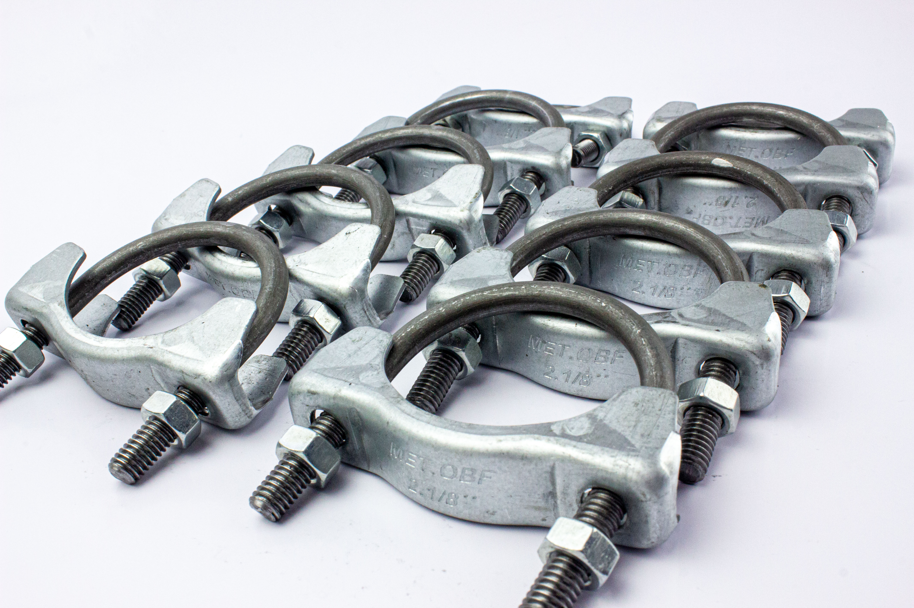

CONHEÇA NOSSA HISTÓRIA

A Metalúrgica OBF foi fundada em setembro de 1994 na cidade de Poá, São Paulo.
A empresa atuou inicialmente na terceirização de serviços na área de ferramentaria, tais como: Projetos, construção e manutenção de ferramentas de corte, dobra e repuxo para vários segmentos do mercado nacional e também no desenvolvimento e produção de dispositivos de solda e calibração de peças.
Atendendo a expansão do mercado, ela investiu no aprimoramento tecnológico de seus equipamento, bem como na capacitação de seus colaboradores.
Em 2005 visando um mercado em crescimento, foi iniciada a produção de peças estampadas para bicicletas, e em seguida para automóveis, e desde então não parou sua busca por inovação e desenvolvimento de produtos com qualidade, para assim atender seus clientes, e prover a solução para as suas necessidades.